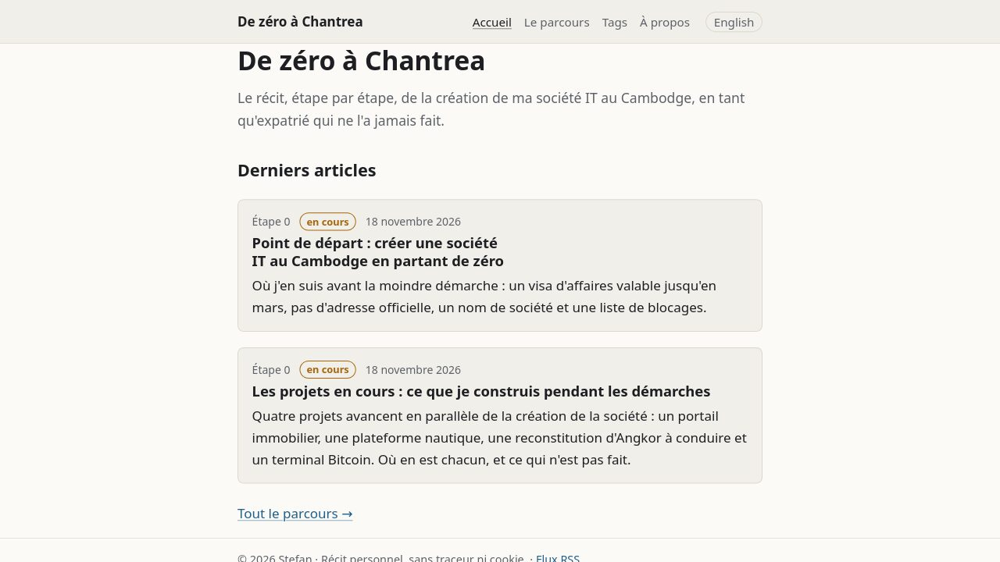

From Zero to ChantreaDe zéro à Chantreaពីសូន្យដល់ Chantrea
A blog that tells, step by step, how an IT company is set up in Cambodia by an expat who has never done it before: what it costs, how long it takes, which documents are needed and the mistakes along the way. Each post belongs to a numbered step of the journey and says whether that step is in progress or done. It is a static site built with Astro and published on GitHub Pages, with no JavaScript sent to the browser and no trackers or cookies. The posts are written in French first, then translated into English and Khmer; the Khmer pages, translated by AI, open with a note until a native speaker has reviewed them.
Un blog qui raconte, étape par étape, la création d’une société IT au Cambodge par un expatrié qui ne l’a jamais fait : ce que cela coûte, combien de temps cela prend, quels documents il faut et les erreurs en chemin. Chaque article appartient à une étape numérotée du parcours et indique si cette étape est en cours ou terminée. C’est un site statique construit avec Astro et publié sur GitHub Pages, sans JavaScript envoyé au navigateur, sans traceur ni cookie. Les articles sont écrits d’abord en français, puis traduits en anglais et en khmer ; les pages khmères, traduites par l’IA, commencent par une note tant qu’une personne de langue maternelle khmère ne les a pas relues.
ប្លុកមួយដែលរៀបរាប់ មួយជំហានម្តងៗ អំពីការបង្កើតក្រុមហ៊ុន IT មួយនៅកម្ពុជា ដោយជនបរទេសម្នាក់ដែលមិនធ្លាប់ធ្វើពីមុនមក៖ ចំណាយប៉ុន្មាន ប្រើពេលប៉ុន្មាន ត្រូវការឯកសារអ្វីខ្លះ និងកំហុសដែលជួបតាមផ្លូវ។ អត្ថបទនីមួយៗស្ថិតនៅក្នុងជំហានមួយដែលមានលេខរៀងនៃដំណើរ ហើយបង្ហាញថាជំហាននោះកំពុងដំណើរការ ឬបានបញ្ចប់។ វាជាគេហទំព័រ static ដែលបង្កើតដោយ Astro និងបោះផ្សាយនៅលើ GitHub Pages ដោយគ្មាន JavaScript ផ្ញើទៅ browser គ្មានកម្មវិធីតាមដាន និងគ្មាន cookie។ អត្ថបទត្រូវបានសរសេរជាភាសាបារាំងមុនគេ បន្ទាប់មកបកប្រែជាភាសាអង់គ្លេស និងខ្មែរ។ ទំព័រភាសាខ្មែរ ដែលបកប្រែដោយ AI ចាប់ផ្តើមដោយកំណត់សម្គាល់មួយ រហូតដល់មានអ្នកដែលមានភាសាខ្មែរជាភាសាកំណើតពិនិត្យវា។

Step by step, as it happens.
The author has never set up a company in Cambodia. The blog follows the process as it happens, one step at a time: what each step costs, how long it takes, which documents it asks for and what goes wrong. The company to be is Chantrea Systems, an IT services company, the name this website carries.
It is a personal account, not legal or tax advice, and every post ends with a note that says so, followed by the date it was written. The repository sets the writing rules: no passport or visa numbers, exact addresses, bank details or names of private people; no figure, time or rule made up, so a missing fact is left as a visible “to be completed” marker; and a link to the official source whenever a post mentions a rule.
Every post has its step.
Each post starts with a short header that the build checks against a schema. If a required field is missing or misspelled, the build stops and names it.
| Field | What it does |
|---|---|
| Step | The number of the step in the journey. The journey page groups the posts by step, in order. |
| Status | In progress or done, shown as a badge. A step is done when all its posts are. |
| Summary | One or two sentences, under the title, in the post lists and in the RSS feed. |
| Cost and time taken | Optional: a cost in US dollars and a free-text duration, shown at the top of the post and on the journey page. |
| Tags | Each tag gets its own page listing its posts. |
| Draft | A draft shows on the local preview only and is left out of the published site. |
| Translation | Posts that share the same key are linked to each other across languages. |
Three posts, all at step 0.
| Step | Post (in French) | What it covers |
|---|---|---|
| 0 | Point de départ : créer une société IT au Cambodge en partant de zéro | Where things stand before any paperwork: a business visa that runs until March, no official address yet, the company name, what already blocks (a registered office with a lease, the company then the work permit before the visa ends, choosing an agent and an accountant), and the seven steps to come, from checking the name at the Ministry of Commerce to applying for the work permit. |
| 0 | Les projets en cours : ce que je construis pendant les démarches | Four projects built while the paperwork goes on, with what works and what is not done: a real-estate portal, a boating platform, Angkor at full scale to drive through and a Bitcoin market terminal. Updated on 21 November with what has changed since: Cambodia Nautic’s phone app, twenty temples modelled for Angkor instead of nine, and the centre of Siem Reap redrawn. |
| 0 | Point au 25 novembre : l’adresse attend, l’outil de gestion avance | A week after the starting point. The registered office’s address has not moved: the Water Festival slowed the administration and kept the police busy. The management tool built for Chantrea Systems on Odoo 19 Community (repository chantrea-odoo) works in Khmer, English and French but is not yet installed on its server, and its 700 Khmer texts, translated by AI, wait for a certified review: none of the 700 has been reviewed. A step is added to the journey: having that Khmer reviewed and certified. |
Plain pages, nothing hidden.
No JavaScript, no trackers
Every page is plain HTML with one stylesheet of under 5 KB. Nothing runs in the browser, there is no analytics and no cookie is set. Astro’s anonymous usage statistics are switched off in the deployment.
The journey page
Every step in order, each with an in progress or done badge, and under it its posts with their date, and their cost and time taken when given.
French, English and Khmer
French sits at the root, English under /en/ and Khmer under /km/. English addresses are translated: /parcours/ becomes /en/journey/; Khmer keeps addresses in Latin letters, such as /km/journey/. A post shows in a language only once it has been translated; the three posts are now in all three.
Khmer, marked as not yet reviewed
The Khmer texts were translated from French by Claude. Until a native speaker has reviewed a page, it opens with a note in italics that says so. Khmer lines are set taller for the stacked letters, and Khmer tags must be spelled exactly alike in every post, or they make separate tag pages.
Light and dark
The theme follows the device setting, in CSS alone.
Ready to share and follow
Open Graph and hreflang tags on every page, a sitemap and one RSS feed per language. The “personal account” note and the date of writing are added to the end of every post automatically.
Étape par étape, au fil de l’eau.
L’auteur n’a jamais créé de société au Cambodge. Le blog suit la démarche au moment où elle se fait, une étape à la fois : ce que coûte chaque étape, combien de temps elle prend, quels documents elle demande et ce qui coince. La future société, c’est Chantrea Systems, une société de services IT, le nom que porte ce site.
C’est un récit personnel, pas un conseil juridique ou fiscal, et chaque article se termine par un encadré qui le rappelle, suivi de la date de rédaction. Le dépôt fixe les règles d’écriture : jamais de numéro de passeport ou de visa, d’adresse exacte, de coordonnées bancaires ni de nom de personne privée ; aucun chiffre, délai ou règle inventés, une information manquante restant signalée par une marque « à compléter » visible ; et un lien vers la source officielle chaque fois qu’un article mentionne une règle.
Chaque article a son étape.
Chaque article commence par un court en-tête que la compilation vérifie d’après un schéma. Si un champ obligatoire manque ou est mal écrit, la compilation s’arrête et le nomme.
| Champ | Ce qu’il fait |
|---|---|
| Étape | Le numéro de l’étape dans le parcours. La page Le parcours regroupe les articles par étape, dans l’ordre. |
| Statut | En cours ou terminé, affiché en pastille. Une étape est terminée quand tous ses articles le sont. |
| Résumé | Une ou deux phrases, sous le titre, dans les listes d’articles et dans le flux RSS. |
| Coût et délai | Facultatifs : un coût en dollars américains et une durée en texte libre, affichés en haut de l’article et sur la page du parcours. |
| Tags | Chaque tag a sa page, qui liste ses articles. |
| Brouillon | Un brouillon n’apparaît qu’en aperçu local et reste hors du site publié. |
| Traduction | Les articles qui partagent la même clé sont liés entre eux d’une langue à l’autre. |
Trois articles, tous à l’étape 0.
| Étape | Article (en français) | Ce qu’il raconte |
|---|---|---|
| 0 | Point de départ : créer une société IT au Cambodge en partant de zéro | L’état des lieux avant la moindre démarche : un visa d’affaires valable jusqu’en mars, pas encore d’adresse officielle, le nom de la société, ce qui bloque déjà (un siège avec un bail, la société puis le permis de travail avant la fin du visa, le choix d’un agent et d’un comptable), et les sept étapes à venir, de la vérification du nom au ministère du Commerce à la demande de permis de travail. |
| 0 | Les projets en cours : ce que je construis pendant les démarches | Quatre projets menés pendant les démarches, avec ce qui fonctionne et ce qui n’est pas fait : un portail immobilier, une plateforme nautique, Angkor à l’échelle réelle à parcourir en véhicule et un terminal de marché Bitcoin. Mis à jour le 21 novembre avec ce qui a changé depuis : l’application pour téléphone de Cambodia Nautic, vingt temples modélisés pour Angkor au lieu de neuf, et le centre de Siem Reap redessiné. |
| 0 | Point au 25 novembre : l’adresse attend, l’outil de gestion avance | Une semaine après le point de départ. L’adresse du siège n’a pas bougé : le festival de l’eau a ralenti l’administration et occupé la police. L’outil de gestion construit pour Chantrea Systems sur Odoo 19 Community (dépôt chantrea-odoo) fonctionne en khmer, en anglais et en français, mais n’est pas encore installé sur son serveur, et ses 700 textes khmers, traduits par l’IA, attendent une relecture certifiée : aucun des 700 n’est encore relu. Une étape s’ajoute au parcours : faire relire et certifier ce khmer. |
Des pages simples, rien de caché.
Ni JavaScript, ni traceur
Chaque page est du HTML simple avec une seule feuille de style de moins de 5 Ko. Rien ne s’exécute dans le navigateur, il n’y a pas de mesure d’audience et aucun cookie n’est déposé. Les statistiques d’usage anonymes d’Astro sont coupées dans le déploiement.
La page du parcours
Toutes les étapes dans l’ordre, chacune avec une pastille en cours ou terminé, et sous elle ses articles avec leur date, et leur coût et leur délai quand ils sont donnés.
Français, anglais et khmer
Le français est à la racine, l’anglais sous /en/ et le khmer sous /km/. Les adresses anglaises sont traduites : /parcours/ devient /en/journey/ ; le khmer garde des adresses en lettres latines, comme /km/journey/. Un article n’apparaît dans une langue qu’une fois traduit ; les trois articles existent désormais dans les trois.
Le khmer, signalé comme non relu
Les textes khmers ont été traduits du français par Claude. Tant qu’une personne de langue maternelle khmère n’a pas relu une page, celle-ci commence par une note en italique qui le dit. Les lignes khmères sont plus hautes pour les lettres superposées, et les tags khmers doivent s’écrire exactement pareil d’un article à l’autre, sinon ils créent des pages de tag séparées.
Clair et sombre
Le thème suit le réglage de l’appareil, en CSS seulement.
Prêt à partager et à suivre
Des balises Open Graph et hreflang sur chaque page, un plan du site et un flux RSS par langue. L’encadré « récit personnel » et la date de rédaction sont ajoutés automatiquement à la fin de chaque article.
មួយជំហានម្តងៗ ស្របពេលដែលវាកើតឡើង។
អ្នកនិពន្ធមិនធ្លាប់បង្កើតក្រុមហ៊ុននៅកម្ពុជាពីមុនមកទេ។ ប្លុកនេះតាមដាននីតិវិធី ស្របពេលដែលវាកំពុងកើតឡើង មួយជំហានម្តងៗ៖ ជំហាននីមួយៗចំណាយប៉ុន្មាន ប្រើពេលប៉ុន្មាន ត្រូវការឯកសារអ្វីខ្លះ និងអ្វីដែលជួបការលំបាក។ ក្រុមហ៊ុនដែលនឹងបង្កើតនោះគឺ Chantrea Systems ជាក្រុមហ៊ុនសេវាកម្ម IT ហើយក៏ជាឈ្មោះរបស់គេហទំព័រនេះដែរ។
នេះជាការរៀបរាប់បទពិសោធន៍ផ្ទាល់ខ្លួន មិនមែនជាដំបូន្មានផ្នែកច្បាប់ ឬពន្ធដារទេ ហើយអត្ថបទនីមួយៗបញ្ចប់ដោយកំណត់សម្គាល់មួយដែលរំលឹកពីចំណុចនេះ ព្រមទាំងកាលបរិច្ឆេទសរសេរ។ ឃ្លាំងកូដកំណត់ច្បាប់នៃការសរសេរ៖ មិនដែលដាក់លេខលិខិតឆ្លងដែន ឬទិដ្ឋាការ អាសយដ្ឋានពិតប្រាកដ ព័ត៌មានធនាគារ ឬឈ្មោះបុគ្គលឯកជនឡើយ។ មិនបង្កើតតួលេខ រយៈពេល ឬច្បាប់ដោយខ្លួនឯងទេ ដូច្នេះព័ត៌មានដែលខ្វះ ត្រូវបានទុកជាសញ្ញា «ត្រូវបំពេញ» ដែលមើលឃើញ។ ហើយមានតំណទៅប្រភពផ្លូវការ រាល់ពេលដែលអត្ថបទនិយាយអំពីច្បាប់ណាមួយ។
អត្ថបទនីមួយៗមានជំហានរបស់វា។
អត្ថបទនីមួយៗចាប់ផ្តើមដោយក្បាលអត្ថបទខ្លីមួយ ដែលការ build ត្រួតពិនិត្យតាម schema។ ប្រសិនបើខ្វះវាលចាំបាច់ណាមួយ ឬសរសេរខុស ការ build នឹងឈប់ ហើយប្រាប់ឈ្មោះវាលនោះ។
| វាល | តួនាទីរបស់វា |
|---|---|
| ជំហាន | លេខរៀងនៃជំហាននៅក្នុងដំណើរ។ ទំព័រ ដំណើរ ដាក់អត្ថបទជាក្រុមតាមជំហាន តាមលំដាប់។ |
| ស្ថានភាព | កំពុងដំណើរការ ឬ បានបញ្ចប់ ដែលបង្ហាញជាស្លាក។ ជំហានមួយបានបញ្ចប់ នៅពេលអត្ថបទទាំងអស់របស់វាបានបញ្ចប់។ |
| សេចក្តីសង្ខេប | មួយ ឬពីរប្រយោគ នៅក្រោមចំណងជើង នៅក្នុងបញ្ជីអត្ថបទ និងនៅក្នុង RSS feed។ |
| ថ្លៃចំណាយ និងរយៈពេល | មិនចាំបាច់៖ ថ្លៃចំណាយជាដុល្លារអាមេរិក និងរយៈពេលជាអត្ថបទសេរី ដែលបង្ហាញនៅខាងលើអត្ថបទ និងនៅលើទំព័រដំណើរ។ |
| ស្លាក (tags) | ស្លាកនីមួយៗមានទំព័រផ្ទាល់ខ្លួន ដែលរាយអត្ថបទរបស់វា។ |
| សេចក្តីព្រាង | សេចក្តីព្រាងបង្ហាញតែនៅក្នុងការមើលជាមុននៅលើកុំព្យូទ័រប៉ុណ្ណោះ ហើយមិនមាននៅលើគេហទំព័រដែលបានបោះផ្សាយទេ។ |
| ការបកប្រែ | អត្ថបទដែលមាន key ដូចគ្នា ត្រូវបានភ្ជាប់គ្នាពីភាសាមួយទៅភាសាមួយទៀត។ |
អត្ថបទបី ទាំងអស់នៅជំហាន 0។
| ជំហាន | អត្ថបទ (ជាភាសាបារាំង) | ខ្លឹមសារ |
|---|---|---|
| 0 | Point de départ : créer une société IT au Cambodge en partant de zéro | ស្ថានភាពមុនពេលចាប់ផ្តើមនីតិវិធីណាមួយ៖ ទិដ្ឋាការអាជីវកម្មដែលមានសុពលភាពរហូតដល់ខែមីនា មិនទាន់មានអាសយដ្ឋានផ្លូវការ ឈ្មោះក្រុមហ៊ុន អ្វីដែលរារាំងរួចហើយ (ការិយាល័យកណ្តាលដែលមានកិច្ចសន្យាជួល ក្រុមហ៊ុន រួចប័ណ្ណការងារ មុនពេលទិដ្ឋាការផុតកំណត់ ការជ្រើសរើសភ្នាក់ងារ និងគណនេយ្យករ) និងជំហានទាំងប្រាំពីរខាងមុខ ចាប់ពីការពិនិត្យឈ្មោះនៅក្រសួងពាណិជ្ជកម្ម រហូតដល់ការស្នើសុំប័ណ្ណការងារ។ |
| 0 | Les projets en cours : ce que je construis pendant les démarches | គម្រោងបួនដែលកំពុងបង្កើត ក្នុងពេលនីតិវិធីកំពុងដំណើរការ ជាមួយអ្វីដែលដំណើរការហើយ និងអ្វីដែលមិនទាន់ធ្វើ៖ វិបផតថលអចលនទ្រព្យ វេទិកាសម្រាប់សកម្មភាពលើទឹក អង្គរតាមមាត្រដ្ឋានពិត សម្រាប់បើកបរ និងស្ថានីយទីផ្សារ Bitcoin។ បានធ្វើបច្ចុប្បន្នភាពនៅថ្ងៃទី 21 ខែវិច្ឆិកា ជាមួយអ្វីដែលបានផ្លាស់ប្តូរចាប់តាំងពីពេលនោះ៖ កម្មវិធីទូរស័ព្ទរបស់ Cambodia Nautic ប្រាសាទម្ភៃដែលបានធ្វើគំរូសម្រាប់អង្គរ ជំនួសឱ្យប្រាំបួន និងកណ្តាលក្រុងសៀមរាបដែលបានគូរឡើងវិញ។ |
| 0 | Point au 25 novembre : l’adresse attend, l’outil de gestion avance | មួយសប្តាហ៍បន្ទាប់ពីចំណុចចាប់ផ្តើម។ អាសយដ្ឋានការិយាល័យកណ្តាលមិនទាន់មានដំណើរការទេ៖ ពិធីបុណ្យអុំទូកបានធ្វើឱ្យរដ្ឋបាលដំណើរការយឺត ហើយនគរបាលជាប់រវល់។ ឧបករណ៍គ្រប់គ្រងដែលបានបង្កើតសម្រាប់ Chantrea Systems លើ Odoo 19 Community (ឃ្លាំងកូដ chantrea-odoo) ដំណើរការជាភាសាខ្មែរ អង់គ្លេស និងបារាំង ប៉ុន្តែមិនទាន់បានដំឡើងនៅលើ server របស់វានៅឡើយទេ ហើយអត្ថបទខ្មែរចំនួន 700 របស់វា ដែលបកប្រែដោយ AI កំពុងរង់ចាំការពិនិត្យដែលមានការបញ្ជាក់ផ្លូវការ៖ មិនទាន់មានអត្ថបទណាមួយក្នុងចំណោម 700 ត្រូវបានពិនិត្យនៅឡើយទេ។ ជំហានថ្មីមួយត្រូវបានបន្ថែមទៅក្នុងដំណើរ៖ ការឱ្យគេពិនិត្យ និងបញ្ជាក់ភាសាខ្មែរនោះ។ |
ទំព័រសាមញ្ញ គ្មានអ្វីលាក់។
គ្មាន JavaScript គ្មានកម្មវិធីតាមដាន
ទំព័រនីមួយៗជា HTML សាមញ្ញ ជាមួយ stylesheet តែមួយ ទំហំតិចជាង 5 KB។ គ្មានអ្វីដំណើរការនៅក្នុង browser ទេ គ្មានការវាស់ស្ទង់អ្នកទស្សនា ហើយមិនដាក់ cookie ណាមួយឡើយ។ ស្ថិតិប្រើប្រាស់អនាមិករបស់ Astro ត្រូវបានបិទនៅក្នុងការដាក់ឱ្យដំណើរការ។
ទំព័រដំណើរ
ជំហានទាំងអស់តាមលំដាប់ ដែលនីមួយៗមានស្លាក កំពុងដំណើរការ ឬ បានបញ្ចប់ ហើយនៅខាងក្រោមមានអត្ថបទរបស់វា ជាមួយកាលបរិច្ឆេទ ព្រមទាំងថ្លៃចំណាយ និងរយៈពេល ប្រសិនបើមាន។
ភាសាបារាំង អង់គ្លេស និងខ្មែរ
ភាសាបារាំងនៅទំព័រដើម ភាសាអង់គ្លេសនៅក្រោម /en/ ហើយភាសាខ្មែរនៅក្រោម /km/។ អាសយដ្ឋានភាសាអង់គ្លេសត្រូវបានបកប្រែ៖ /parcours/ ក្លាយជា /en/journey/ ឯភាសាខ្មែររក្សាអាសយដ្ឋានជាអក្សរឡាតាំង ដូចជា /km/journey/។ អត្ថបទមួយបង្ហាញជាភាសាណាមួយ លុះត្រាតែវាត្រូវបានបកប្រែរួច។ ឥឡូវនេះ អត្ថបទទាំងបីមានទាំងបីភាសា។
ភាសាខ្មែរ ដែលសម្គាល់ថាមិនទាន់បានពិនិត្យ
អត្ថបទខ្មែរត្រូវបានបកប្រែពីភាសាបារាំងដោយ Claude។ ដរាបណាអ្នកដែលមានភាសាខ្មែរជាភាសាកំណើតមិនទាន់បានពិនិត្យទំព័រណាមួយ ទំព័រនោះចាប់ផ្តើមដោយកំណត់សម្គាល់ជាអក្សរទ្រេតដែលប្រាប់ពីចំណុចនេះ។ បន្ទាត់ភាសាខ្មែរខ្ពស់ជាងមុន សម្រាប់ស្រៈ និងជើងអក្សរដែលនៅជាន់គ្នា ហើយស្លាកភាសាខ្មែរត្រូវតែសរសេរដូចគ្នាទាំងស្រុងនៅគ្រប់អត្ថបទ បើមិនដូច្នោះទេ វានឹងបង្កើតទំព័រស្លាកដាច់ដោយឡែកពីគ្នា។
ភ្លឺ និងងងឹត
រចនាបថធ្វើតាមការកំណត់របស់ឧបករណ៍ ដោយប្រើតែ CSS ប៉ុណ្ណោះ។
ងាយស្រួលចែករំលែក និងតាមដាន
ស្លាក Open Graph និង hreflang នៅលើទំព័រនីមួយៗ sitemap មួយ និង RSS feed មួយសម្រាប់ភាសានីមួយៗ។ កំណត់សម្គាល់ «ការរៀបរាប់ផ្ទាល់ខ្លួន» និងកាលបរិច្ឆេទសរសេរ ត្រូវបានបន្ថែមដោយស្វ័យប្រវត្តិនៅចុងអត្ថបទនីមួយៗ។
A look around.Le blog en images.ប្លុកតាមរយៈរូបភាព។


How it is built.
| Astro | Static site generator. A single route builds every page for each language: home, journey, tags, about and posts. |
| Content | Markdown files in src/content/articles/<language>/, the file name giving the address; the fields of their header are checked by a schema in content.config.ts. |
| i18n.ts | The languages, the interface texts and the translated address segments, in one file. |
| Style | One CSS file, light or dark from the device setting, with system fonts and taller lines for Khmer. |
| Feeds | One RSS feed per language, and a sitemap, from Astro’s official integrations. |
| Publishing | GitHub Actions builds the site on every push to main and publishes it to GitHub Pages in one to two minutes. |
| History | Nineteen commits from 18 to 25 November 2026, from the empty Astro project to the Khmer version of the blog. |
Comment c’est construit.
| Astro | Générateur de site statique. Une seule route construit toutes les pages dans chaque langue : accueil, parcours, tags, à propos et articles. |
| Contenu | Des fichiers Markdown dans src/content/articles/<langue>/, le nom du fichier donnant l’adresse ; les champs de leur en-tête sont vérifiés par un schéma dans content.config.ts. |
| i18n.ts | Les langues, les textes de l’interface et les segments d’adresse traduits, dans un seul fichier. |
| Style | Un seul fichier CSS, clair ou sombre selon le réglage de l’appareil, avec les polices du système et des lignes plus hautes pour le khmer. |
| Flux | Un flux RSS par langue et un plan du site, grâce aux intégrations officielles d’Astro. |
| Publication | GitHub Actions construit le site à chaque push sur main et le publie sur GitHub Pages en une à deux minutes. |
| Historique | Dix-neuf commits du 18 au 25 novembre 2026, du projet Astro vide à la version khmère du blog. |
របៀបដែលវាត្រូវបានបង្កើត។
| Astro | កម្មវិធីបង្កើតគេហទំព័រ static។ route តែមួយបង្កើតទំព័រទាំងអស់សម្រាប់ភាសានីមួយៗ៖ ទំព័រដើម ដំណើរ ស្លាក អំពី និងអត្ថបទ។ |
| ខ្លឹមសារ | ឯកសារ Markdown នៅក្នុង src/content/articles/<ភាសា>/ ដែលឈ្មោះឯកសារក្លាយជាអាសយដ្ឋាន។ វាលនៃក្បាលអត្ថបទ ត្រូវបានត្រួតពិនិត្យដោយ schema នៅក្នុង content.config.ts។ |
| i18n.ts | ភាសា អត្ថបទនៃផ្ទាំងប្រើប្រាស់ និងផ្នែកអាសយដ្ឋានដែលបានបកប្រែ នៅក្នុងឯកសារតែមួយ។ |
| រចនាបថ | ឯកសារ CSS តែមួយ ភ្លឺ ឬងងឹតតាមការកំណត់របស់ឧបករណ៍ ជាមួយពុម្ពអក្សររបស់ប្រព័ន្ធ និងបន្ទាត់ខ្ពស់ជាងមុនសម្រាប់ភាសាខ្មែរ។ |
| Feeds | RSS feed មួយសម្រាប់ភាសានីមួយៗ និង sitemap មួយ ពី integrations ផ្លូវការរបស់ Astro។ |
| ការបោះផ្សាយ | GitHub Actions បង្កើតគេហទំព័ររាល់ពេល push ទៅ main ហើយបោះផ្សាយវានៅលើ GitHub Pages ក្នុងរយៈពេលមួយ ទៅពីរនាទី។ |
| ប្រវត្តិ | commits ចំនួន 19 ពីថ្ងៃទី 18 ដល់ថ្ងៃទី 25 ខែវិច្ឆិកា ឆ្នាំ 2026 ពីគម្រោង Astro ទទេ រហូតដល់កំណែភាសាខ្មែររបស់ប្លុក។ |
Three posts, now in French, English and Khmer.
A summary of the latest commits in the repository, up to 25 November 2026.
- The whole blog in Khmer
The blog gets a Khmer side under
/km/: the interface, the About page and the three posts, translated by Claude, each page opening with a note that no native speaker has reviewed it yet. Khmer gets taller lines for its stacked letters, and its addresses stay in Latin letters. The README now lists the three languages and explains how to translate into English or Khmer and why Khmer tags must be spelled exactly alike. - The posts in English
The update of 25 November becomes the blog’s first post in English, followed the same day by the starting point and the projects in progress, each linked to its French version. The English About page gets back a paragraph that only the French version had, and the English projects post now calls the remorque a tuk-tuk, a motorbike pulling a passenger trailer.
- A third post: the update of 25 November
A third step-0 post says where things stand a week later. The registered office’s address has not moved, with the Water Festival slowing the administration and keeping the police busy. The management tool built for Chantrea Systems on Odoo 19 Community works but is not installed on its server yet, and its 700 Khmer texts wait for a certified review, none reviewed so far. A step is added to the journey: having that Khmer reviewed and certified.
- The projects post, updated
The post on the projects in progress is updated and ends with what has changed since its first version: Cambodia Nautic has a phone app, with an offline mode for the crew, trip tracking and an alert when a return is late, and its accessibility has been checked; Angkor goes from nine to twenty temples modelled, now from the EFEO’s surveys, with the centre of Siem Reap redrawn. The real-estate portal and BTC Terminal have not changed, but details were added.
- Second post: the projects in progress
A second step-0 post presents the four projects built while the paperwork goes on: the real-estate portal, the boating platform, Angkor at full scale and the Bitcoin market terminal. It was written as a draft first, then published the same day.
- The first post goes online
The starting-point post is published. Before that, it gained a lead for the registered office: renting a bungalow on a long lease where the author is staying, which would give both a home and an official address. It also notes an open question: whether the office address becomes public once the company is registered, which matters when it is also a home.
Earlier versions of this page, with their captures and videos: History →
Trois articles, désormais en français, en anglais et en khmer.
Un résumé des derniers commits du dépôt, jusqu’au 25 novembre 2026.
- Tout le blog en khmer
Le blog a une partie khmère sous
/km/: l’interface, la page À propos et les trois articles, traduits par Claude, chaque page commençant par une note qui dit qu’aucune personne de langue maternelle khmère ne l’a encore relue. Le khmer a des lignes plus hautes pour ses lettres superposées, et ses adresses restent en lettres latines. Le README liste désormais les trois langues et explique comment traduire en anglais ou en khmer, et pourquoi les tags khmers doivent s’écrire exactement pareil. - Les articles en anglais
Le point au 25 novembre devient le premier article du blog en anglais, suivi le jour même du point de départ et des projets en cours, chacun lié à sa version française. La page About anglaise retrouve un paragraphe que seule la version française avait, et l’article anglais sur les projets appelle désormais la remorque un tuk-tuk, une moto qui tire une remorque à passagers.
- Un troisième article : le point au 25 novembre
Un troisième article d’étape 0 fait le point une semaine plus tard. L’adresse du siège n’a pas bougé : le festival de l’eau a ralenti l’administration et occupé la police. L’outil de gestion construit pour Chantrea Systems sur Odoo 19 Community fonctionne, mais n’est pas encore installé sur son serveur, et ses 700 textes khmers attendent une relecture certifiée, aucun n’étant encore relu. Une étape s’ajoute au parcours : faire relire et certifier ce khmer.
- L’article sur les projets, mis à jour
L’article sur les projets en cours est mis à jour et se termine par ce qui a changé depuis sa première version : Cambodia Nautic a une application pour téléphone, avec un mode sans connexion pour l’équipage, le suivi des sorties et une alerte en cas de retour en retard, et son accessibilité a été vérifiée ; Angkor passe de neuf à vingt temples modélisés, désormais d’après les relevés de l’EFEO, avec le centre de Siem Reap redessiné. Le portail immobilier et BTC Terminal n’ont pas changé, mais des précisions ont été ajoutées.
- Deuxième article : les projets en cours
Un deuxième article d’étape 0 présente les quatre projets menés pendant les démarches : le portail immobilier, la plateforme nautique, Angkor à l’échelle réelle et le terminal de marché Bitcoin. Écrit d’abord en brouillon, il a été publié le jour même.
- Le premier article en ligne
L’article « Point de départ » est publié. Il a gagné auparavant une piste pour le siège : louer en bail longue durée un bungalow là où l’auteur loge, ce qui donnerait à la fois un logement et une adresse officielle. Il note aussi une question ouverte : l’adresse du siège devient-elle publique une fois la société enregistrée ? Cela compte quand c’est aussi celle où l’on vit.
Les versions antérieures de cette page, avec leurs captures et leurs vidéos : Historique →
អត្ថបទបី ឥឡូវនេះជាភាសាបារាំង អង់គ្លេស និងខ្មែរ។
សេចក្តីសង្ខេបនៃ commit ចុងក្រោយក្នុង repository រហូតដល់ថ្ងៃទី 25 ខែវិច្ឆិកា ឆ្នាំ 2026។
- ប្លុកទាំងមូលជាភាសាខ្មែរ
ប្លុកទទួលបានផ្នែកភាសាខ្មែរនៅក្រោម
/km/៖ ផ្ទាំងប្រើប្រាស់ ទំព័រ «អំពី» និងអត្ថបទទាំងបី ដែលបកប្រែដោយ Claude ហើយទំព័រនីមួយៗចាប់ផ្តើមដោយកំណត់សម្គាល់មួយ ដែលប្រាប់ថា មិនទាន់មានអ្នកដែលមានភាសាខ្មែរជាភាសាកំណើតបានពិនិត្យវានៅឡើយទេ។ ភាសាខ្មែរមានបន្ទាត់ខ្ពស់ជាងមុន សម្រាប់អក្សរដែលនៅជាន់គ្នា ហើយអាសយដ្ឋានរបស់វានៅតែជាអក្សរឡាតាំង។ ឥឡូវនេះ README រាយបញ្ជីភាសាទាំងបី និងពន្យល់ពីរបៀបបកប្រែជាភាសាអង់គ្លេស ឬខ្មែរ និងហេតុអ្វីបានជាស្លាកភាសាខ្មែរត្រូវតែសរសេរដូចគ្នាទាំងស្រុង។ - អត្ថបទជាភាសាអង់គ្លេស
បច្ចុប្បន្នភាពថ្ងៃទី 25 ខែវិច្ឆិកា ក្លាយជាអត្ថបទដំបូងរបស់ប្លុកជាភាសាអង់គ្លេស បន្តនៅថ្ងៃដដែលដោយចំណុចចាប់ផ្តើម និងគម្រោងដែលកំពុងធ្វើ ដែលនីមួយៗភ្ជាប់ទៅកំណែភាសាបារាំងរបស់វា។ ទំព័រ About ភាសាអង់គ្លេស ទទួលបានវិញនូវកថាខណ្ឌមួយ ដែលមានតែនៅក្នុងកំណែភាសាបារាំង ហើយអត្ថបទភាសាអង់គ្លេសអំពីគម្រោង ឥឡូវហៅ remorque ថា tuk-tuk ដែលជាម៉ូតូអូសរ៉ឺម៉កដឹកអ្នកដំណើរ។
- អត្ថបទទីបី៖ បច្ចុប្បន្នភាពថ្ងៃទី 25 ខែវិច្ឆិកា
អត្ថបទទីបីនៅជំហាន 0 ប្រាប់ពីស្ថានភាព មួយសប្តាហ៍ក្រោយមក។ អាសយដ្ឋានការិយាល័យកណ្តាលមិនទាន់មានដំណើរការទេ៖ ពិធីបុណ្យអុំទូកបានធ្វើឱ្យរដ្ឋបាលដំណើរការយឺត ហើយនគរបាលជាប់រវល់។ ឧបករណ៍គ្រប់គ្រងដែលបានបង្កើតសម្រាប់ Chantrea Systems លើ Odoo 19 Community ដំណើរការ ប៉ុន្តែមិនទាន់បានដំឡើងនៅលើ server របស់វានៅឡើយទេ ហើយអត្ថបទខ្មែរចំនួន 700 របស់វា កំពុងរង់ចាំការពិនិត្យដែលមានការបញ្ជាក់ផ្លូវការ ដោយមិនទាន់មានអត្ថបទណាមួយត្រូវបានពិនិត្យនៅឡើយទេ។ ជំហានថ្មីមួយត្រូវបានបន្ថែមទៅក្នុងដំណើរ៖ ការឱ្យគេពិនិត្យ និងបញ្ជាក់ភាសាខ្មែរនោះ។
- អត្ថបទអំពីគម្រោង ត្រូវបានធ្វើបច្ចុប្បន្នភាព
អត្ថបទអំពីគម្រោងដែលកំពុងធ្វើ ត្រូវបានធ្វើបច្ចុប្បន្នភាព ហើយបញ្ចប់ដោយអ្វីដែលបានផ្លាស់ប្តូរ ចាប់តាំងពីកំណែដំបូងរបស់វា៖ Cambodia Nautic មានកម្មវិធីទូរស័ព្ទ ដែលមានរបៀបប្រើដោយគ្មានអ៊ីនធឺណិតសម្រាប់នាវិក ការតាមដានដំណើរ និងការជូនដំណឹង នៅពេលការត្រឡប់មកវិញយឺត ហើយភាពងាយស្រួលប្រើប្រាស់របស់វាត្រូវបានត្រួតពិនិត្យ។ អង្គរកើនពីប្រាសាទប្រាំបួន ដល់ម្ភៃដែលបានធ្វើគំរូ ដោយឥឡូវផ្អែកលើការវាស់វែងរបស់ EFEO ហើយកណ្តាលក្រុងសៀមរាបត្រូវបានគូរឡើងវិញ។ វិបផតថលអចលនទ្រព្យ និង BTC Terminal មិនបានផ្លាស់ប្តូរទេ ប៉ុន្តែព័ត៌មានលម្អិតត្រូវបានបន្ថែម។
- អត្ថបទទីពីរ៖ គម្រោងដែលកំពុងធ្វើ
អត្ថបទទីពីរនៅជំហាន 0 បង្ហាញគម្រោងបួន ដែលកំពុងបង្កើតក្នុងពេលនីតិវិធីកំពុងដំណើរការ៖ វិបផតថលអចលនទ្រព្យ វេទិកាសម្រាប់សកម្មភាពលើទឹក អង្គរតាមមាត្រដ្ឋានពិត និងស្ថានីយទីផ្សារ Bitcoin។ វាត្រូវបានសរសេរជាសេចក្តីព្រាងជាមុន ហើយបានបោះផ្សាយនៅថ្ងៃដដែល។
- អត្ថបទដំបូងត្រូវបានបោះផ្សាយ
អត្ថបទដំបូង ស្តីពីចំណុចចាប់ផ្តើម ត្រូវបានបោះផ្សាយ។ មុននោះ វាបានបន្ថែមជម្រើសមួយសម្រាប់ការិយាល័យកណ្តាល៖ ជួលបឹងហ្គាឡូមួយ ដោយកិច្ចសន្យាជួលរយៈពេលវែង នៅកន្លែងដែលអ្នកនិពន្ធកំពុងស្នាក់នៅ ដែលនឹងផ្តល់ទាំងកន្លែងស្នាក់នៅ និងអាសយដ្ឋានផ្លូវការ។ វាក៏កត់សម្គាល់សំណួរមួយដែលមិនទាន់មានចម្លើយ៖ តើអាសយដ្ឋានការិយាល័យកណ្តាលក្លាយជាសាធារណៈឬទេ នៅពេលក្រុមហ៊ុនបានចុះបញ្ជី ដែលជារឿងសំខាន់ នៅពេលអាសយដ្ឋាននោះក៏ជាកន្លែងស្នាក់នៅផងដែរ។
កំណែមុនៗនៃទំព័រនេះ ជាមួយរូបថតអេក្រង់ និងវីដេអូរបស់វា៖ ប្រវត្តិ →